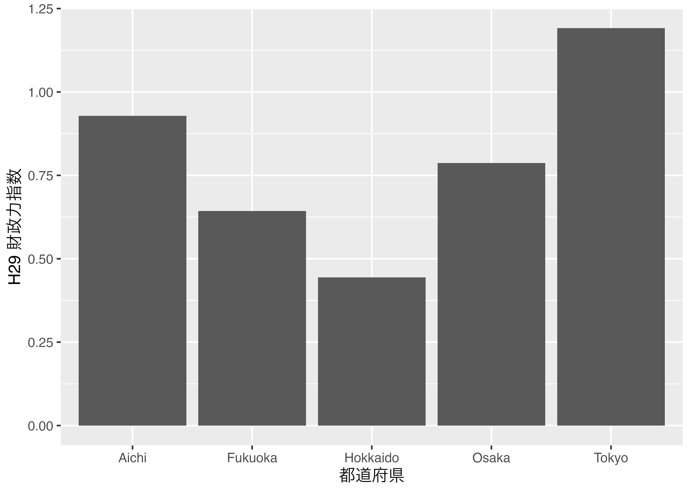
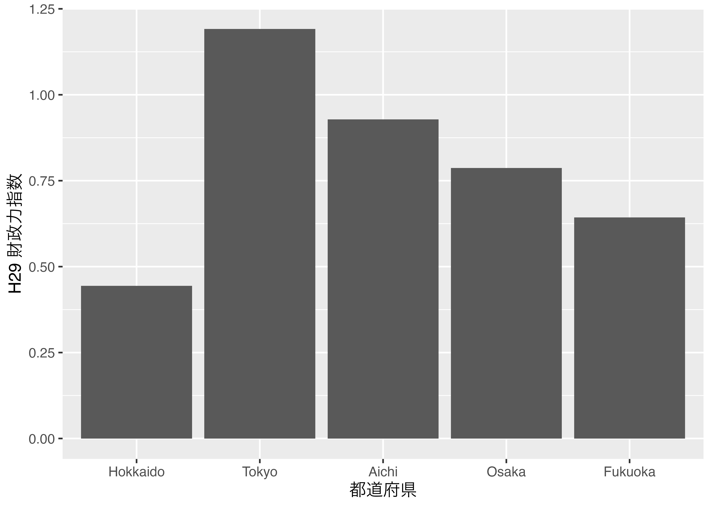
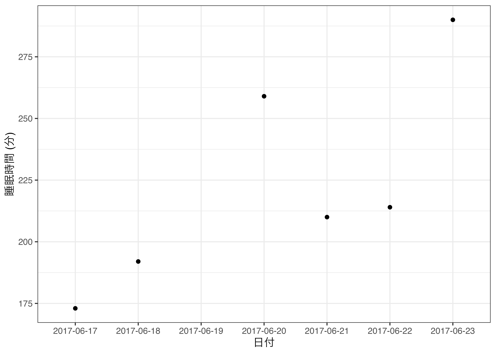
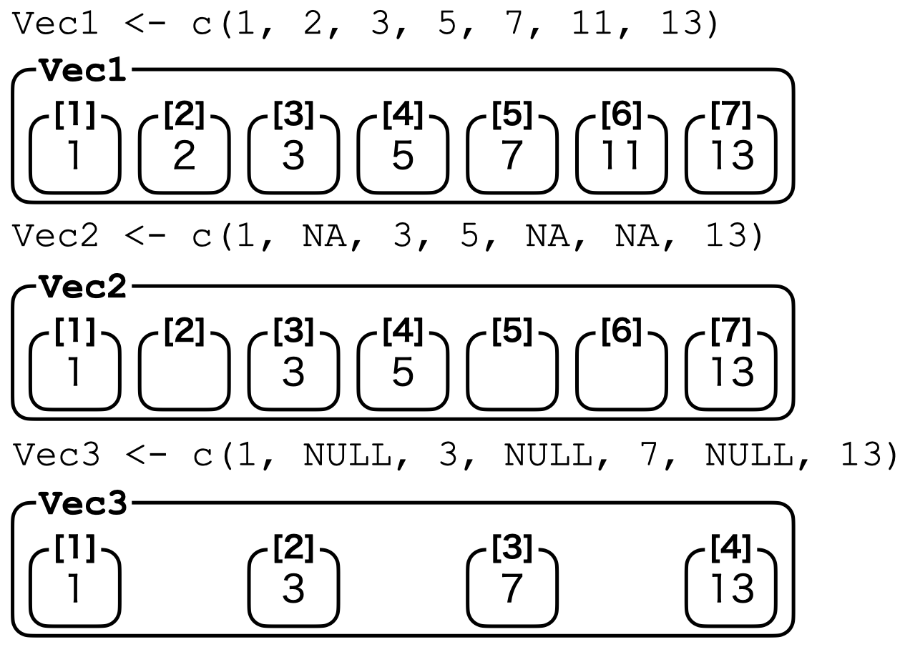

[,1] [,2] [,3] [,4] [,5]
[1,] 2 5 11 17 23
[2,] 3 7 13 19 299 データ型
9.1 データ型とは
ここではRにおけるデータ型について説明します。第10章で説明するデータ「構造」とデータ「型」は異なる概念です。次章でも説明しますが、Rにおけるデータの最小単位はベクトルです。c(1, 2, 3, 4, 5)やc("Yanai", "Song", "Hadley")もベクトルですが、30とか"R"もベクトルです。後者のように要素が1つのベクトルは原子ベクトル (atomic vector)とも呼ばれますが、本質的には普通ベクトルです。このベクトルの要素の性質がデータ型です。たとえばc(2, 3, 5, 7, 11)は数値型ですし、c("R", "Python", "Julia")は文字型です。他にも第7章で紹介したFALSEやTRUEは論理型と呼ばれています。一つのベクトルは複数の要素で構成されることも可能ですが、必ず同じデータ型である必要があります。
しかし、データ分析を行う際はベクトル以外のデータも多いです。行列や表がその典型例です。しかし、行列でも表でも中身の一つ一つの要素は長さ1のベクトルに過ぎません。たとえば、以下のような2行5列のベクトルがあるとします。ここで1行3列目の要素は11であり、長さ1の数値型ベクトルです。あるいは5列目はc(23, 29)であり、長さ2の数値型ベクトルです。
表についても考えてみましょう。以下の表の3行2列目の要素は"American Samoa"という長さ1の文字型ベクトルです。また、6列目はc("UEFA", "CAF", "OFC", "UEFA", "CAF", "CONCACAF")であり、これは長さ6の文字型ベクトルです。このようにRで扱う全てのデータは複数のベクトルが集まっているものです。
ID Team Rank Points Prev_Points Confederation
1 1 Albania 75 1325 1316 UEFA
2 2 Algeria 85 1271 1271 CAF
3 3 American Samoa 133 1030 1030 OFC
4 4 Andorra 155 749 749 UEFA
5 5 Angola 121 1117 1117 CAF
6 6 Antigua and Barbuda 153 787 787 CONCACAFつまり、複数のベクトルを綺麗に、または分析しやすく集めたのが行列や表であり、これがデータ構造に該当します。データ型ごとの処理方法については本書を通じて紹介して行きますので、本章は軽く読んで頂いても構いません。ただし、Factor型とDate & Datetime型の処理はやや特殊ですので、手を動かしながら読み進めることをおすすめします。
ここではデータ型について紹介し、次章ではデータ構造について解説します。
9.2 Logical
Logical型はTRUEとFALSEのみで構成されたデータ型です。練習としてなにかの長さ5の論理型ベクトルを作ってみましょう。
注意すべきこととしては、TRUEとFALSEは"で囲まないことです。"TRUE"、"FALSE"と入力してしまえばlogical 型として認識されません。もし、一つ間違えて2番目の要素であるFALSEを"FALSE"と入力したらどうなるでしょうか。
[1] "TRUE" "FALSE" "TRUE" "TRUE" "FALSE"2番目の要素だけでなく、他の全ての要素も"で囲まれるようになりました。実際に、この2つのベクトルのデータ型を確認してみましょう。ベクトルのデータ型を確認する関数はclass()関数です。
logical_vec1はlogical型ですが、logical_vec2はcharacter型と認識されます。
他にも、is.logical()関数を使ってあるベクトルがlogical型か否かを判定することも可能です。もし、ベクトルがlogical型ならTRUEが、logical型以外ならFALSEが返って来ます。
Logical型は様々な場面で使われますが、代表的な使い方は第7.1章で紹介しました要素の抽出と第11章で紹介する予定の条件分岐 (if()やifelse())、条件反復 (while())があります。
9.3 Numeric
Numeric型は数値型ですが、まずはnumeric型のベクトルnumeric_vec1を作成し、データ型を確認してみましょう。
is.logical()に似た関数is.numeric()も使用可能です。
もうちょっと詳しく分けるとinteger型とdouble型があります。以下の内容はあまり意識的に区分して使う場面が稀ですので、(読み)飛ばしても構いません。
integerは整数型であり、doubleは実数型です。これはclass()関数では確認できず、typeof()関すを使います。
一般的に作成するnumeric型のベクトルは全てdouble型です。もし、整数型のベクトルを作成したい場合、数値の後ろにLを付けます。
ここでも注意すべき点としては、一つでもLが付かない要素が含まれる場合、自動的にdouble型に変換されるという点です。
もちろんですが、小数点のある数値にLを付けてもinteger型にはならず、勝手にdouble型になります。また、integer型同士の割り算の結果もdouble型になります。これは2L/1Lのような場合でも同じです。足し算、引き算、掛け算はinteger型になります。
[1] "double"[1] "double"[1] "double"[1] "integer"[1] "integer"[1] "integer"一般的な分析において整数と実数を厳格に区別して使う場面は多くないと考えられますので、今のところはあまり気にしなくても問題ないでしょう。
9.4 Complex
Complex型は複素数を表すデータ型であり、実数部+虚数部iのように表記します。まず、複素数のベクトルcomplex_vec1を作成し、データ型を確認してみましょう。
[1] 1.0+3i 3.0+2i 2.5+7i[1] "complex"あまりおすすめはできませんが、虚数部i+実数部のような書き方も可能です。
[1] 1.0+3i 3.0+2i 2.5+7i[1] "complex"complex_vec1とcomplex_vec2は同じベクトルであることを確認してみましょう。
もし、ベクトル内にnumeric型とcomplex型が混在している場合、強制的にcomplex型に変換されます。変換された後の値は実数部+0iのようになります。
9.5 Character
Character型は文字列で構成されているデータ型です。Rを含む多くの言語は文字列を表現するために、中身を"で囲みます。"abc"はcharacter型ですが、"1"や"3+5i"もcharacter型です。数字であっても"で囲んだらそれは文字列となります。それではいくつかのcharacter型ベクトルを作っていみましょう。
char_vec1 <- c("Yanai", "Song", "Shigemura", "Tani")
char_vec2 <- c(1, 2, 3, 4)
char_vec3 <- c("1", "2", "3", "4")
char_vec1[1] "Yanai" "Song" "Shigemura" "Tani" [1] 1 2 3 4[1] "1" "2" "3" "4"char_vec2とchar_vec3の違いは通じを"で囲んだか否かです。ベクトルの中身を見ても、char_vec2は"で囲まれていません。データ型を見てみましょう。
やはりchar_vec3もcharacter型になっていることが分かります。
9.6 Factor
Factor型はラベル付きの数値型データです。Factor型の見た目はcharacter型とほぼ同じですし、分析の場面においてもcharacter型とほぼ同じ扱いになります。Factor型とcharacter型との違いは、「順序が付いている」点です。例えば、以下の質問文に対するアンケートの結果を考えてみましょう。
- あなたは猫がすきですか。
- めちゃめちゃ好き
- めちゃ好き
- 好き
- どちらかといえば好き
以下の 表 9.1 は5人の結果です。
| ID | Name | Cat |
|---|---|---|
| 1 | Yanai | めちゃめちゃ好き |
| 2 | Song | めちゃめちゃ好き |
| 3 | Shigemura | どちらかといえば好き |
| 4 | Tani | めちゃ好き |
| 5 | Hadley | 好き |
人間としてはこの表から、重村という人がどれだけ猫が嫌いなのかが分かります。ただし、Rはそうではありません。Rは日本語どころか、人間の言葉は理解できません。各項目ごとに順番を付けてあげる必要がありますが、そのために使われるのがfactor型です。
実習のために 表 9.1 のCat列のみのベクトルを作ってみましょう。
[1] "めちゃめちゃ好き" "めちゃめちゃ好き" "どちらかといえば好き"
[4] "めちゃ好き" "好き" [1] "character"factor_vec1は普通の文字列ベクトルであることが分かります。これをfactor型に変換するためにはfactor()関数を使います。
factor_vec2 <- factor(factor_vec1, ordered = TRUE,
levels = c("どちらかといえば好き", "好き",
"めちゃ好き", "めちゃめちゃ好き"))
class(factor_vec2)[1] "ordered" "factor" データ型がfactor型に変換されています。"ordered"というものも付いていますが、これについては後ほど説明します。それでは中身をみましょう。
[1] めちゃめちゃ好き めちゃめちゃ好き どちらかといえば好き
[4] めちゃ好き 好き
Levels: どちらかといえば好き < 好き < めちゃ好き < めちゃめちゃ好きいくつかの点で異なります。まず、文字列であるにもかかわらず、"で囲まれていいない点です。そして3行目に4 Levels:というのが追加されている点です。このlevelは「水準」と呼ばれるものです。4 Levelsですから、factor_vec2は4つの水準で構成されていることを意味します。Factor型の値は予め指定された水準以外の値を取ることはできません。たとえば、2番目の要素を「超好き」に変えてみましょう。
Warning in `[<-.factor`(`*tmp*`, 2, value = "超好き"): invalid factor level, NA
generated[1] めちゃめちゃ好き <NA> どちらかといえば好き
[4] めちゃ好き 好き
Levels: どちらかといえば好き < 好き < めちゃ好き < めちゃめちゃ好き警告が表示され、2番目の要素が後ほど紹介する欠損値となっていることが分かります。それでは普通に「好き」を入れてみましょう。
[1] めちゃめちゃ好き 好き どちらかといえば好き
[4] めちゃ好き 好き
Levels: どちらかといえば好き < 好き < めちゃ好き < めちゃめちゃ好き今回は問題なく置換できましたね。このようにfactor型の取りうる値は既に指定されています。また、## 4 Levels: どちらかといえば好き < 好き < ... < めちゃめちゃ好きからも分かるように、その大小関係の情報も含まれています。猫好きの度合いは「どちらかといえば好き-好き-めちゃ好き-めちゃめちゃ好き」の順で高くなることをRも認識できるようになりました。
Factor型はこのように順序付きデータを扱う際に便利なデータ型ですが、順序情報を含まないfactor型もあります。これはfactor()を使う際、ordered = TRUE引数を削除するだけでできます。
[1] めちゃめちゃ好き めちゃめちゃ好き どちらかといえば好き
[4] めちゃ好き 好き
Levels: どちらかといえば好き 好き めちゃ好き めちゃめちゃ好き[1] "factor"今回は3行目が## Levels: どちらかといえば好き 好き めちゃ好き めちゃめちゃ好きとなり、順序に関する情報がなくなりました。また、class()で確認しましたデータ型に"ordered"が付いていません。これは順序なしfactor型であることを意味します。「順序付けしないならfactor型は要らないのでは…?」と思うかも知れませんが、これはこれで便利です。その例を考えてみましょう。
分析においてfactor型はcharacter型に近い役割を果たしますが、factor型なりの長所もあります。それは図や表を作成する際です。例えば、横軸が都道府県名で、縦軸がその都道府県の財政力指数を表す棒グラフを作成するとします。たとえば、 表 9.2 のようなデータがあるとします。このデータは3つの列で構成されており、IDとZaisei列はnumeric型、Pref列はcharacter型です。
| ID | 都道府県 | 財政力指数 |
|---|---|---|
| 1 | Hokkaido | 0.44396 |
| 2 | Tokyo | 1.19157 |
| 3 | Aichi | 0.92840 |
| 4 | Osaka | 0.78683 |
| 5 | Fukuoka | 0.64322 |
可視化については第19章以降で詳しく解説しますが、このPref列をcharacter型にしたままグラフにしますと 図 9.1 のようになります。

このようにアルファベット順で横軸が並び替えられます。別にこれでも問題ないと思う方もいるかも知れませんが、基本的に日本の都道府県は北から南の方へ並べるのが一般的な作法です1。北海道と東京、大阪の間には順序関係はありません。しかし、表示される順番は固定したい。この場合、Pref列を順序なしfactor型にすれば良いです2。データフレームの列を修正する方法は第10章で詳しく説明します。
zaisei_dfのPref列をfactor型にしてから同じ図を描くと 図 9.2 のようになります。

都道府県以外にもこのような例は多くあります。順序尺度で測定された変数が代表的な例です。他にも政党名を議席数順で表示させたい場合もfactor型は有効でしょう。
9.7 Date
9.7.1 なぜDate型があるのか
Date型は年月日を表すデータ型3です。この2つのデータ型はかなり複雑ですが、ここでは簡単に説明します。Date型は日付の情報を含むため、順序関係が成立します。その意味では順序付きFactor型とあまり挙動は変わらないかもしれませんが、実際はそうではありません。
たとえば、Songの1週間4の睡眠時間を記録したデータSongSleepがあるとします。Dateという列には日付が、Sleep列には睡眠時間が記録されています。睡眠時間の単位は「分」です。
中身をみると、以下のようになります。
Date Sleep
1 2017-06-17 173
2 2017-06-18 192
3 2017-06-19 314
4 2017-06-20 259
5 2017-06-21 210
6 2017-06-22 214
7 2017-06-23 290日付を横軸に、睡眠時間を縦軸にした散布図を描く 図 9.3 のようになります。{ggplot2}を利用した作図については第19章で解説しますので、ここではDate型の特徴のみ理解してもらえたら十分です。
ggplot(SongSleep,
mapping = aes(x = Date, y = Sleep)) +
geom_point() +
labs(x = "日付", y = "睡眠時間 (分)") +
theme_gray(base_size = 12)この図は全く問題ないように見えます。それでは、Date列をそれぞれDate型に変換し、SoongSleepデータのDateDとしてみます。データフレームの列追加については第10.4章で解説します。
中身を見てみますが、あまり変わっていないようです。DateとDateD列は全く同じように見えますね。
Date Sleep DateD
1 2017-06-17 173 2017-06-17
2 2017-06-18 192 2017-06-18
3 2017-06-19 314 2017-06-19
4 2017-06-20 259 2017-06-20
5 2017-06-21 210 2017-06-21
6 2017-06-22 214 2017-06-22
7 2017-06-23 290 2017-06-23図にすると実は先ほどの図と同じものが得られます。
ggplot(SongSleep,
mapping = aes(x = DateD, y = Sleep)) +
geom_point() +
labs(x = "日付", y = "睡眠時間 (分)") +
theme_gray(base_size = 12)
しかし、Songがうっかり6月19日に記録するのを忘れたとします。つまり、SongSleepデータの3行目が抜けている状況を考えてみましょう。データフレームの要素抽出については第10.4章で解説します。
中身をみると、以下のようになります。DateもDateDも同じように見えます。
Date Sleep DateD
1 2017-06-17 173 2017-06-17
2 2017-06-18 192 2017-06-18
4 2017-06-20 259 2017-06-20
5 2017-06-21 210 2017-06-21
6 2017-06-22 214 2017-06-22
7 2017-06-23 290 2017-06-23この状態で横軸をDateにしたらどうなるでしょうか（ 図 9.4 ）。
ggplot(SongSleep2,
mapping = aes(x = Date, y = Sleep)) +
geom_point() +
labs(x = "日付", y = "睡眠時間 (分)") +
theme_gray(base_size = 12)一方、横軸をDateDにしたものが 図 9.5 です。
ggplot(SongSleep2,
mapping = aes(x = DateD, y = Sleep)) +
geom_point() +
labs(x = "日付", y = "睡眠時間 (分)") +
theme_gray(base_size = 12)違いが分かりますかね。違いは抜けている6月19日です。 図 9.4 を見ると、横軸の6月18日の次が20日になっています。一方、 図 9.5 は19日になっており、ちゃんと空けてくれますね。これはDate型でない場合、データにないものは図に表示されないことを意味します。一方、Date型は抜けている日があっても、図に表示表示されます。一般のcharacter型またはfactor型でこのようなことを再現するためには、6月19日の列を追加し、睡眠時間を欠損値として指定する必要があります。たとえば、SongSleepデータにおいて6月19日の行は温存したまま、睡眠時間だけを欠損値にしてみましょう。
Date Sleep DateD
1 2017-06-17 173 2017-06-17
2 2017-06-18 192 2017-06-18
3 2017-06-19 NA 2017-06-19
4 2017-06-20 259 2017-06-20
5 2017-06-21 210 2017-06-21
6 2017-06-22 214 2017-06-22
7 2017-06-23 290 2017-06-23このように日付はあるが、睡眠時間が欠損している場合、図にしたものが 図 9.6 です。
ggplot(SongSleep3,
mapping = aes(x = Date, y = Sleep)) +
geom_point() +
labs(x = "日付", y = "睡眠時間 (分)") +
theme_bw()Warning: Removed 1 rows containing missing values (`geom_point()`).
横軸上に6月19日が表示されます。このようにDate型でなくてもDate型と同じように動かすことは可能ですが、非常に面倒です。その意味でDate型は時系列データを扱う際に非常に便利なデータ型です。
9.7.2 Date型の作り方
Date型を作成方法はいくつかあります。
- character型をDate型にする
- numeric型をDate型にする
主に使う方法は1であり、既に前節でお見せしましたas.Date()関数を使います。方法2もまたas.Date()を使いますが、これは「xxxx年xx月xx日から何日目」という書き方となり、起点となる日付 (origin)5を指定する必要があります。
ここでは方法1について解説します。日付を表すいくつかのベクトルを作ってみましょう。
[1] "2020-05-21"[1] "2020-05-21"[1] "2020-05-21"[1] "2020-05-21"[1] "2020-05-21"[1] "2020-05-21"[1] "2020-05-21"Date1、Date2、Date3のようなベクトルの場合、as.Date()のみでDate型に変換できます。つまり、日付が数字のみで構成され、年が4桁となっており、年月日が-または/で区切られている場合はこれでだけで十分です。しかし、年が2桁になっていたり、その他の記号が使われたり、区切られていない場合は、fotmat =引数を指定する必要があります。たとえばDate4は年が2桁となっているます。2桁の年は%yと表記します。この表記法の一部を以下の表で紹介します。
| 表記 | 説明 | 例 |
|---|---|---|
%y |
年 (2桁) | 20 |
%Y |
年 (4桁) | 2020 |
%m |
月 (数字) | 5, 10 |
%b |
月 (文字) | Jan |
%B |
月 (文字) | January |
%d |
日 | 5, 05, 13 |
他にも様々な表記法がありますが、詳細は?strptimeで確認してみてください。
他にも、日本では使わない表記法ですが、月を英語で表記したり、日月年の順で表記する場合があります。後者はformat =引数の順番を変えるだけで問題有りませんが、問題は前者です。そこで使うのが%bまたは%Bです。%bは3文字の月表記で、%Bはフルネームです。
[1] "2020-05-21"[1] "2020-05-21"うまくいかないですね。これはシステムの時間ロケールが日本になっているのが原因です。ロケール設定はSys.getlocale()で確認できます。
これをSys.setlocale()を使って、"C"に変更します。
それではもう一回やってみましょう。
[1] "2020-05-21"[1] "2020-05-21"うまく動くことが確認できました。念の為に、ロケールを戻しておきます。
9.7.3 POSIXct、POSIXlt型について
POSIXct、POSIXlt型は日付だけでなく時間の情報も含むデータ型です。これらはas.POSIXct()、as.POSIXlt()関数で作成することができます。どちらも見た目は同じデータ型ですが、内部構造がことなります6。詳細は?as.POSIXctまたは?as.POSIXltを参照してください。
9.8 NA
NAは欠損値と呼ばれます。これは本来は値があるはずなのがなんらかの理由で欠損していることを意味します。 表 9.3 の例を考えてみましょう。
| ID | 名前 | 支持政党の有無 | 支持政党 |
|---|---|---|---|
| 1 | Yanai | ない | NA |
| 2 | Song | ある | ラーメン大好き党 |
| 3 | Shigemura | ある | 鹿児島第一党 |
| 4 | Tani | ない | NA |
3列目で支持政党があるケースのみ、4列目に値があります。YanaiとTaniの場合、支持する政党がないため、政治政党名が欠損しています。実際、多くのデータには欠損値が含まれています。世論調査データの場合はもっと多いです。理由としては「Q2で”はい”を選んだ場合のみQ3に進み、それ以外はQ4へ飛ばす」のようなのもありますが、単に回答を拒否した場合もあります。
まずは欠損値が含まれたベクトルna_vec1を作ってみましょう。
つづいて、データ型を確認してみましょう。
NAが含まれていてもデータ型はnumericのままです。これは「一応、欠損しているが、ここに何らかの値が割り当てられるとしたらそれはnumeric型だろう」とRが判断しているからです。ある要素がNAか否かを判定するにはis.na()関数を使います。
2番目と4番目の要素が欠損していることが分かります。
欠損値も要素の一つとしてカウントされるため、ベクトルの長さは6になります。ベクトルの長さはlength()関数で確認できます。
欠損値の取り扱い
欠損値を含むデータの処理方法はやや特殊です。まず、na_vec1の要素全てに1を足してみましょう。
この場合、欠損値の箇所には1が足されず、それ以外の要素のみに1を足した結果が返ってきます。これは直感的に考えると自然です。問題になるのは欠損値が含まれるベクトルを関数に入れた場合です。たとえば、numeric型ベクトル内の要素の総和を求めるにはsum()関数を使います。sum(c(1, 3, 5))を入力すると9が返されます。na_vec1は欠損していない要素が1, 3, 5, 6であるため、総和は15のはずです。確認してみましょう。
このように欠損値を含むベクトルの総和はNAとなります。もし、欠損値を除いた要素の総和を求めるには、まずベクトルから欠損値を除去する必要があります。そのためにはis.na()関数を使ってna_vec1の要素を抽出します。ただし、is.na()を使うと、欠損値であるところがTRUEになるため、これを反転する必要があります。この場合は!is.na()関数を使います。それではis.na()と!is.na()を使って要素を抽出してみましょう。
!is.na()を使うことで欠損値を除いた要素のみを取り出すことができました。これならsum()関数も使えるでしょう。
これで欠損値を除いた要素の総和を求めることができました。ただし、一部の関数には欠損値を自動的に除去するオプションを持つ場合があります。sum()関数のその一部であり、na.rm = TRUEオプションを付けると、欠損値を除いた総和を返します。
欠損値の使い方
主に欠損値を扱うのは入手したデータに含まれる欠損値に対してですが、NAをこちらから生成することもあります。それは空ベクトルを用意する時です。第11章では関数の作り方について解説します。関数内で何らかの処理を行い、その結果を返すことになりますが、その結果を格納するベクトルを事前に作っておくこともできます。こちらの方がメモリの観点からは効率的です。以下は第11章を読んでから読んでも構いません。
もし、長さ10のベクトルresult_vec1を返すとします。ベクトルの要素として1から10の数字が入るとします。一つ目の方法としてはまず、result_vec1に1を代入し、次はc()を使って要素を一つずつ足して行く手順です。
result_vec1 <- 1
result_vec1 <- c(result_vec1, 2)
result_vec1 <- c(result_vec1, 3)
result_vec1 <- c(result_vec1, 4)
result_vec1 <- c(result_vec1, 5)
result_vec1 <- c(result_vec1, 6)
result_vec1 <- c(result_vec1, 7)
result_vec1 <- c(result_vec1, 8)
result_vec1 <- c(result_vec1, 9)
result_vec1 <- c(result_vec1, 10)二つ目の方法はまず、10個のNAが格納されたベクトルReuslt.Vec2を作っておいて、その中に要素を置換してく方法です。
以上の手順を第11章で紹介するfor()を使って反復処理するとしたら、以下のようなコードになります。
結果を確認してみましょう。
コードの書き方は異なりますが、どれも結果は同じです。また、どちらが早いかというと、これくらいの計算ならどの方法でも同じです。ただし、より大規模の反復作業を行う場合、後者の方が時間が節約でき、コードの可読性も高いです。
9.9 NULL
NULLは「存在しない」、空っぽであることを意味します。先ほどのNAはデータは存在するはずなのに、何らかの理由で値が存在しない、または割り当てられていないことを意味しますが、NULLは「存在しません」。したがって、NULLが含まれたベクトルを作成しても表示されません。NULLが含まれたnull_vec1を作ってみましょう。
3番目の要素であるNULLは表示されません。ということはNAと違って、データの長さも5ではなく4でしょう。確認してみます。
このnull_vec1のデータ型は何でしょう。
is.null()関数もありますが、どうでしょうか。
NULLは存在しないことを意味するため、null_vec1は要素が4のnumeric型ベクトルです。is.null()でNULLが判定できるのはis.null(NULL)のようなケースです。
図 9.7 はNA型とNULL型の違いについてまとめたものです。

このNULLはいつ使うのでしょうか。実際、使う機会はあまりありません。強いて言えば、空っぽのリストを作成する際に使うケースがあります。リストについては第10章で説明します。以下の例は第10章を読み終わってから目を通して下さい。
$Room1
[1] 1 2 3
$Room2
[1] "Yuki" "Jaehyun" "Hadley"
$Room3
NULLこのように予めリストの要素は作っておきたいが、とりあえず空けておく際に使います。続く分析の段階でnull_list1[["Room3"]]に何かを格納したりすることに使えるでしょう。ちなみにこの場合はis.null()が使用可能です。
9.10 NaN
NaNはnumeric型、中でもdouble型の一種ですが、これは計算できない値を意味します。つまり、NaN値を直接入力することはめったにありませんが、計算の結果としてNaNが返されるケースがあります。代表的な例が0を0で割った場合です。実際、0を0で割ることはできません。ここでは0を0で割った値を含むnan_vec1作ってみましょう。
先ほどせつめいしましたように、NaNはnumeric型の一部ですので、データ型としてはnumeircになります。ある値がNaNか否かを判定するにはis.nan()関数を使います。
9.11 Inf
Infもまたnumeric型、中でもdouble型の一部ですが、これは無限大を意味します。Infも通常、自分から作成するケースはあまりなく、結果として帰ってくる場合があります。一つの例が0以外の数値を0で割った場合です。それではなんらかの数値を0を割った値が含まれるベクトルinf_vec1を作ってみましょう。
[1] 0.2947368 Inf -Inf NaN[1] "numeric"正の値を0で割ったらInfが負の値を0で割ったら-Infが返ってきます。これは正の無限大、負の無限大を意味します。データ型はNaNと同様、numeric型ですが、is.infinite()を使うと、無限大か否かが判定できます。